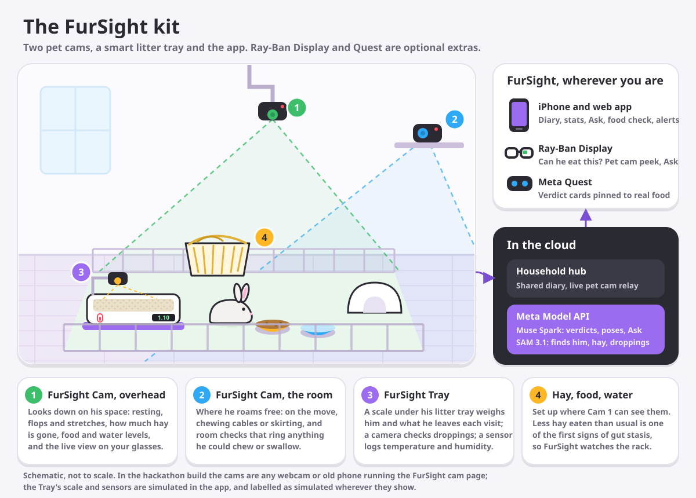

The FurSight kit
Rabbits hide illness. The kit watches the small daily things that change first: how much hay goes, his weight, what he leaves in the tray, how he rests. It notices, your vet decides.

In the box
- FurSight Cam ×2: one overhead on the pen, one for the room.
- FurSight Tray: a scale under his litter tray, a camera looking down into it, a temperature and humidity sensor.
- The app: iPhone and web, with Ray-Ban Display and Quest if you have them.
Setting it up
- Cam 1 over his space, with his hay, food bowl and water in view.
- Cam 2 where he roams free, high up, out of reach.
- The Tray where his litter tray goes. Zero it once, empty.
- Link each one to your household with a 4-letter code.
In this hackathon build
Real The app on web, iPhone, Ray-Ban Display and Quest; pet cams (any webcam or old phone running the cam page); food checks, Ask, stickers, hay and bowl levels, all on the Meta Model API.
Simulated The Tray's scale, droppings camera and temperature sensor, until the hardware is built. Everything simulated is labelled as simulated wherever it shows.
Try it without the kit
A demo rabbit with two weeks of life, a simulated pet cam, the Tray, and its room sensor.